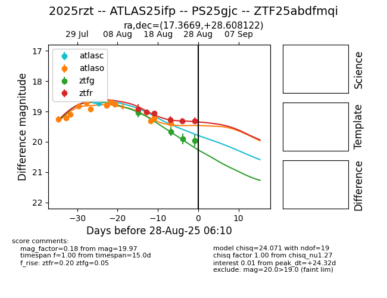

Target 2025rzt at 2025-08-26 10:37, see:
FINK: fink-portal.org/ZTF25abdfmqi
Lasair: lasair-ztf.lsst.ac.uk/objects/ZTF25abdfmqi
ALeRCE: alerce.online/object/ZTF25abdfmqi
TNS: wis-tns.org/object/2025rzt
YSE: ziggy.ucolick.org/yse/transient_detail/2025rzt
alt names
ZTF25abdfmqi (ztf,fink)
2025rzt (tns,yse)
ATLAS25ifp (atlas)
PS25gjc (panstarrs)
coordinates:
equatorial (ra, dec) = (17.3669,+28.60812)
galactic (l, b) = (127.7112,-34.09626)
photometry
last atlasc=18.72, atlaso=19.40, ztfg=19.90, ztfr=19.31
2 atlasc, 12 atlaso, 3 ztfg, 5 ztfr detections
